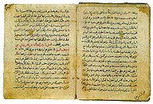
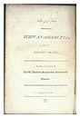
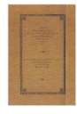
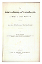
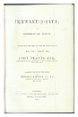
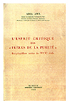

Galerie
From the Manuscript Tradition to the Printed Text: the Rasa’il of the Ikhwan al-Safa’
Les Ikhwan al-Safa’ (Frères de la Pureté) sont un pseudonyme porté par un groupe de penseurs musulmans qui, à la fin du neuvième et au début du dixième siècle, ont produit un corps encyclopédique de 52 épîtres (rasa’il), sur un large éventail de sujets allant de la cosmologie aux sciences physiques, de l’éthique à l’esthétique, et de la révélation à la métaphysique.
Ces épîtres sont divisées en quatre principaux ouvrages ou sections: Parmi ceux-ci, 14 mettent l’accent sur les ‘sciences de la mathématique’ (nombres, géométrie, astronomie, musique, etc.); 17 traitent des ‘sciences physiques et naturels (physique, minéralogie, botanique, etc.); 10 se penchent sur les ‘sciences psychologiques et intellectuelles’ (cosmologie, eschatologie, etc.); et 11 étudient les ‘sciences théologiques et religieuses’ (prophétie, métaphysique, magie, etc.). Le travail dans son ensemble concerne ainsi tous les aspects majeurs de la vie humaine, religieuse, sociale, économique, scientifique et politique.
Cherchant à montrer la compatibilité de la foi islamique avec d’autres religions et traditions intellectuelles, les auteurs des Rasa’il ont utilisé des sources très variées. Des traits d’éléments babylonien, judéo-chrétien, perse et indiens, ainsi que les influences de diverses écoles de sagesse hellénique ont imprégné les Rasa’il. Le trait commun, d’un bout à l’autre des Rasa’il, se caractérise dans l’utilisation par les Ikhwan, de fables, paraboles et allégories pour exposer leurs points de vue. Une telle histoire allégorique, est représentée par le long débat entre l’homme et une variété de représentants du royaume animal, qui occupe une grande partie de l’épître vingt-deux et apparaît comme un élément central de ce travail encyclopédique.
Les Ikhwan al-Safa’ sont arrivés à occuper une position unique dans l’histoire de la pensée islamique et ont retenu l’attention des scientifiques à l’Est et à l’Ouest. Une preuve éloquente de leur popularité et influence réside dans l’existence de plusieurs copies de manuscrits du texte, éparpillées à travers le monde, aussi bien dans les collections privées et les bibliothèques institutionnelles, que dans les grands nombres de textes imprimés, traductions et études des Rasa’il, parus à travers les siècles.
 Parmi les différentes éditions et traductions des Rasa’il, l’épître sur le débat entre les humain et les délégués du royaume animal, a bénéficié d’une large circulation. Cette épître a été d’abord traduite en hébreu par l’auteur du quatorzième siècle Kalonimos ben Kalonimos, et a été imprimée à plusieurs reprises. Elle a également formé la première édition imprimée du texte arabe (editio princeps) des Rasa’il, qui a été publiée à Calcutta en 1812. Dans la deuxième moitié du dix-neuvième siècle, cette épître a été traduite en hindustani et en français.
Le texte complet en arabe des Rasa’il a été d’abord publié en une édition de quatre volumes, entre 1887-89. D’autres éditions en arabe ont été publiées dans la première moitié du vingtième siècle: une édition du Caire en 1928 étant la plus notable.
C’est seulement dans la dernière partie du dix-neuvième siècle que les scientifiques occidentaux avaient commencé à s’intéresser sérieusement aux Ikhwan al-Safa et leurs Rasa’il. Parmi les principaux participants de l’Ouest, on note le scientifique allemand Fr. Dieterici qui, durant quelques trente années, a publié des textes et des études sur la philosophie islamique, avec comme principaux sujets de réflexion, les Ikhwan al-Safa’. Et c’était Dieterici qui a traduit dans son intégralité le corps des Ikhwan al-Safa’ en allemand, pour la première fois- cela reste jusqu’à nos jours la seule traduction complète des Rasa’il dans une langue occidentale.
L’édition en arabe et la traduction en hindustani publiée à Calcutta ont servi de base pour les premières traductions anglaises. Sept traductions, au moins, ont été publiées dans la deuxième moitié du dix-neuvième siècle et, peut-être, comme attendu, elles s’agissaient toutes de l’épître sur le débat entre l’homme et les animaux.
Au cours de ce siècle, les traductions d’épîtres sélectionnées en espagnol, allemand, italien et anglais ainsi qu’un nombre substantiel d’études monographiques et articles ont été publiés. Des scientifiques tels que Adel Awa, Alessandro Bausani, Abbas Hamdani, Yves Marquet, Seyyed Hossein Nasr, Ian Netton, Samuel Stern et bien d’autres ont contribué de manière importante à l’étude des Ikhwan al-Safa’ et leurs Rasa’il.
 Entrée
Entrée